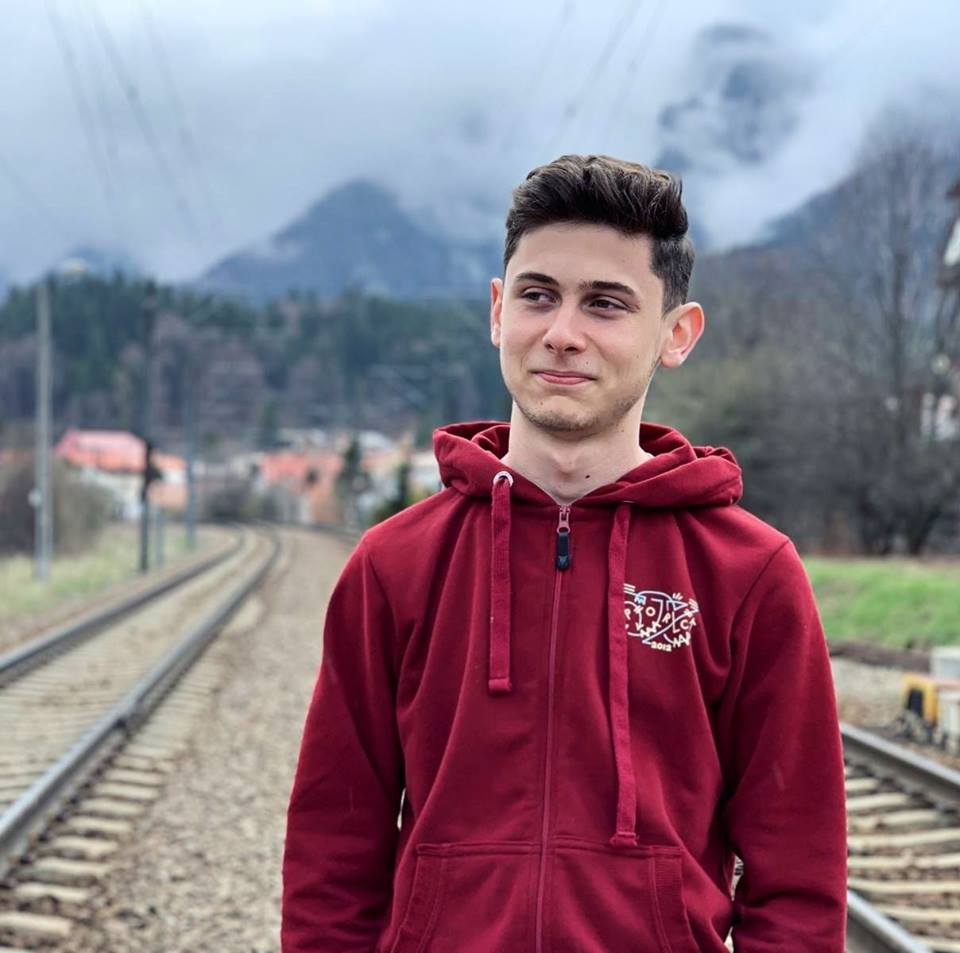
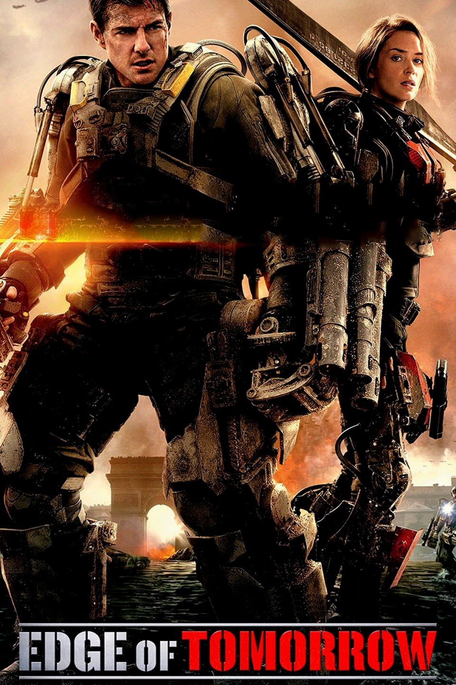

Voica Mihai Cristian
Student la Facultatea de Matematică și Informatică din București
Cursuri pe care le urmez acest semestru:
- Tehnici WEB
- Tehnici Avansate de programare
- Calculabilitate și complexitate
- Statistică și probabilități
- Geometrie Computațională
- Sisteme de operare
3 filme preferate:
- Battleship
- The edge of tomorrow
- Joker
Imagini care mă reprezintă:

Ceva foarte amuzant: "Un om avea doi cai, unul alb si unul negru si ca sa-i deosebeasca la unu' i-a taiat coada."
THE EDGE OF TOMORROW
